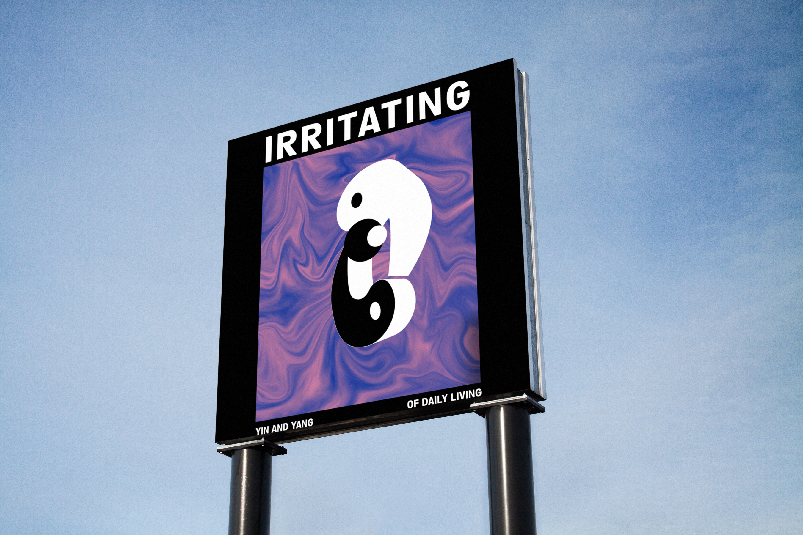
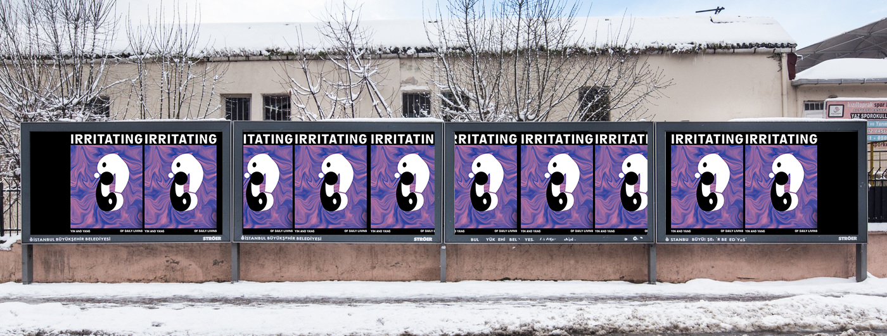

PART 2: MOSQUITO BITES
2019
Everyday, we encounter hundreds (if not thousands) of disparate pieces of information in the form of facts. They can spark curiosity, joy, or shock; provide us with knowledge; reinforce our existing opinions; persuade us to change our thoughts and behavior; or provoke us to reconsider our previous assumptions, and lead us to new meanings.
From the Google “I’m feeling curious” algorithm, I researched about why mosquito bites itch.
Motion Graphics, Conceptual



Everyday, we encounter hundreds (if not thousands) of disparate pieces of information in the form of facts. They can spark curiosity, joy, or shock; provide us with knowledge; reinforce our existing opinions; persuade us to change our thoughts and behavior; or provoke us to reconsider our previous assumptions, and lead us to new meanings.
From the Google “I’m feeling curious” algorithm, I researched about why mosquito bites itch.
Motion Graphics, Conceptual